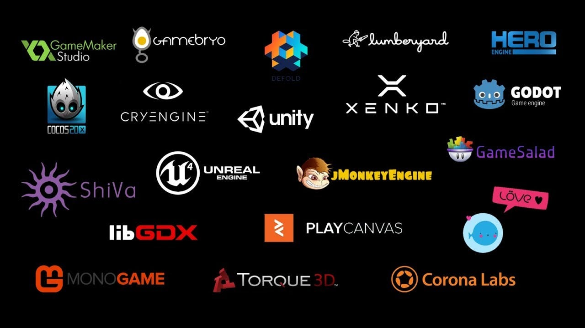

Proprietary Game Engine Code Familiarity
Good engineers love unfamiliar systems because they love learning


Because of this question that arose suddenly on my mind about the choice of game engine this question what will you lose and gain when you choose to build your own game engine? Recalling that I have not addressed this issue of having a home-built system of any kind be it a game engine or not for those that will join your initiative to get started fastly. But I should agree with you that even if raised this concern an event more meaningful opinion surged from my thinking. This opinion is that an engineer trying to understand how a system works is an opportunity for finding more technical ideas even if at the end of your learning you don't still understand how the system you are studying works you will almost surely discover during your learning journey solutions for other problems and ideas about what to build next.
The same is true when it is about choosing to build our own game engine for your game idea because if you need the contribution of other game developers they will need to study and understand the source code of this engine and this, in turn, will make them more committed to staying with you because they can use the knowledge about this game engine elsewhere. All they will be able to sell elsewhere is their creativity and their ability to solve big problems what they will be best at because everybody normally should acknowledge that understanding something and making it better is not easy and that’s what this game developer who is leaving your game studio did and she could sell this highly valuable professional currency to the next game studio or the next startup and even the next company that is able to correctly see that what should matter to it is not someone who knows how its own system works but someone who is able to grasp an unknown system fastly and make it better. That’s what every kind of organization should seek and a game studio is an organization even if you actually are driving it to success alone.
You could clearly see that I am still working around choices which are also decisions to be made and I hope that this article and this one titled Question of choice of game engine could help you grasp the choices in front and the decisions that I have taken for the game engine that will fuel Godda Game next game concepts about learning and living while gaming. Almost all the tech-enabled gameplay concepts to be developed by Godda Game need a peculiar game engine because the technical features that they require aren't covered by actual game engines. I have already highlighted here some of these features. You may find them reading these articles.
I am also about to notice you the decision that I have taken which is to transfer the ownership and responsibility of this online Third-party service from this venture project that I code called Emb…..e to Godda Game because this third party service is also about Gaming but gaming in community with words and numbers.
PS: I hope that I will be sharing more about this journey into the game industry that I am experiencing thought at least the medium of words promptly arranged to form a short of a long article that I will be publishing here in the Game Development journal a Medium’s publication to read and follow because it offers us game development enthusiasts a Medium for sharing everything that could travel through fiber optic cable.